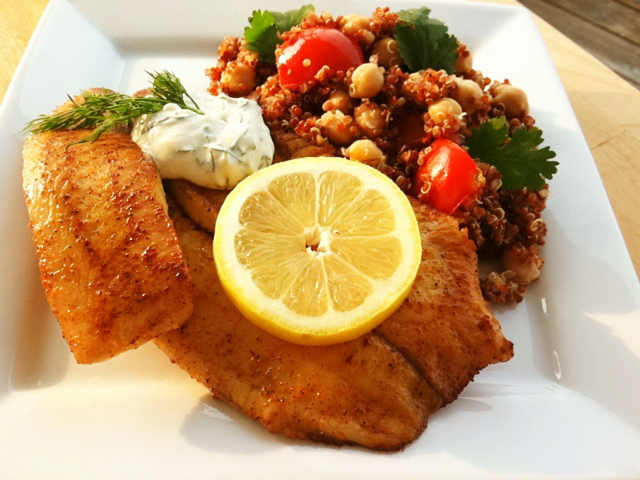

|  |
Ingredients
- 4 (4 ounce) fillets tilapia
- salt and pepper to taste
- 1 tablespoon Cajun seasoning, or to taste
- 1 lemon, thinly sliced
- ¼ cup mayonnaise
- ½ cup sour cream
- ⅛ teaspoon garlic powder
- 1 teaspoon fresh lemon juice
- 2 tablespoons chopped fresh dill
|